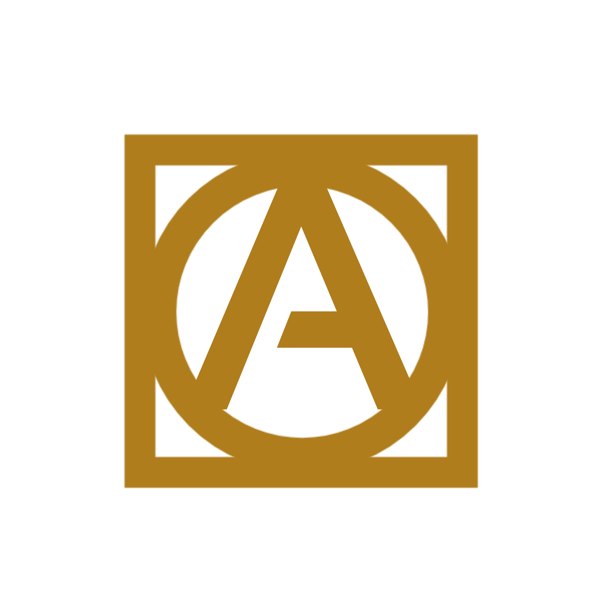

Ao² Projetos é um escritório virtual que atende todo Brasil de forma totalmente online. Focado em atender profissionais de Engenharia Civil e Arquitetura que queiram terceirizar a elaboração de seus projetos. Cobramos um valor por metro quadrado, que é fixo para parceiros e varia de acordo com a metragem para não parceiros. Contamos com uma equipe de Cadistas/Projetistas, composta por estudantes de engenharia civil e arquitetura com experiência na elaboração de projetos em Revit e AutoCad. Quer saber mais? Envie-nos uma mensagem e conheça nossos serviços.
